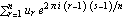
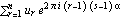
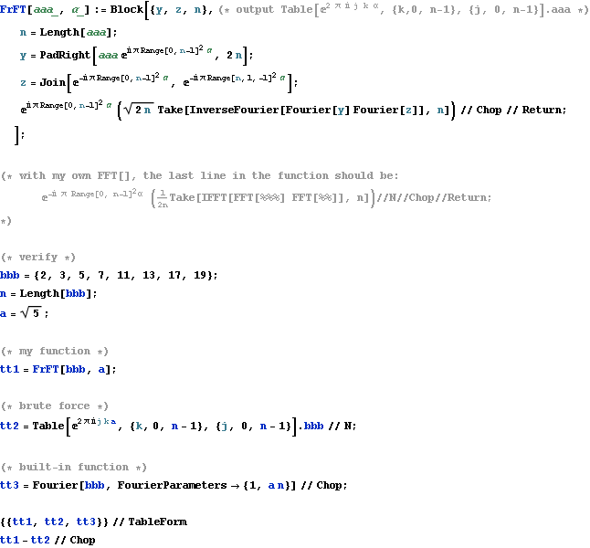

FRFT
The discrete Fourier transform evaluate  
In some cases we need the fractional Fourier transform (FrFT)
This can also be done in O(n log n) computations.
The following algorithm is given by David H. Bailey & Paul N. Swarztrauber.
Again, the built-in function Fourier[] which can do this.
I just write this to serve as a pseudo code so that i can impliment it in C.
Note that the inverse FrFT is unnecessary since α can be negative.

|
|
|